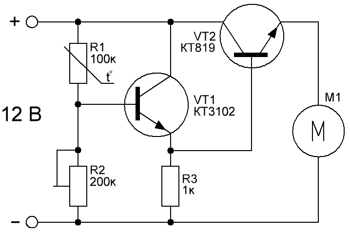

Регулятор скорости вентилятора-3
Автоматический регулятор скорости вращения вентилятора следить за температурой и при повышении температуры увеличивает обороты вентилятора. Кроме уменьшения шума такое устройство значительно увеличит срок службы самого вентилятора.

Рис. 1 - Схема автоматического регулятора скорости вращения вентилятора
Схема предназначена на использование стандартных вентиляторов на напряжение 12В. VT1 – маломощный n-p-n транзистор, например, КТ3102Б, BC547B, КТ315Б. Здесь желательно использовать транзисторы с коэффициентом усиления 300 и больше. VT2 – мощный n-p-n транзистор, именно он коммутирует вентилятор. Можно применить КТ819, КТ829. Желательно выбрать транзистор с большим коэффициентом усиления. R1 – терморезистор ММТ-4 сопротивлением 10-200 кОм. Номинал подстроечного резистора R2 зависит от выбора термистора, он должен быть в 1,5 – 2 раза больше. Этим резистором задаётся порог срабатывания включения вентилятора
Таблица 1
| Обозначение | Наименование | Номинал | Количество | Примечание |
|---|---|---|---|---|
| R1 | Терморезистор | ММТ-4 100 кОм | 1 | 10-200 кОм |
| R2 | Резистор подстроечный | 200 кОм | 1 | 1,5 – 2 раза больше R1 |
| R3 | Резистор постоянный | 1 кОм/0,5 Вт | 1 | |
| М1 | Вентилятор | 12В | 1 | |
| VT1 | Транзистор биполярный | КТ3102Б | 1 | BC547B, КТ315Б |
| VT2 | Транзистор биполярный | КТ819 | 1 | КТ829 |
Для насторойки регулятора устанавливаем подстроечный резистор в минимальное положение (база VT1 подключена к минусу источника питания). Вентилятор при этом вращаться не должен. Затем, плавно поворачивая R2, находим момент, когда вентилятор начинает вращаться на минимальных оборотах и поворачиваем подстроечный чуть-чуть обратно, чтобы он перестал вращаться. Для проверки работы регулятора прикладываем палец к терморезистору и вентилятор должен начинать вращаться. Таким образом, когда температура терморезистора равно комнатной, вентилятор не крутится, но стоит ей подняться, он сразу же начнёт охлаждать.
Источники
sdelaysam-svoimirukami.ru - Автоматический регулятор оборотов кулера